WELCOME FOLKS!
Give your thoughts a voice with our new venture
Enter some text in the input below or upload a file and press return or the "Play" button to hear it. Change voices using the given Dropdown menu
The site is the manifestation of the effort put forth by our team ' The glib owl ' is a basically a Text Reader (text-to-speech convertor) and helps converting text to speech. It uses a translator and a speech-synthesiser in the background for the purpose of analysis of the text and finally for its conversion. The application involves speech synthesis in myriad languages and you have a choice over the accent and the language of what you enter. We are currently pursuing our B.Tech in CSE and took up this project as an experiment to stack up some idea on APIs and also to try our hands on web designing(a dream of every freshman :) ).
PS: This web application may not work smoothly on Google Chrome and Mozilla Firefox. We are working on them to remove the glitches.
Do check it out. Any suggestions are welcome.
Happy Listening!